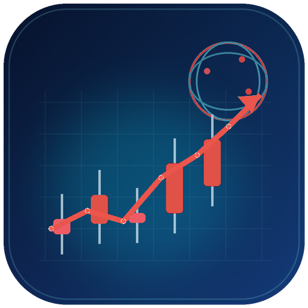

行情工作台
待选择股票
等待行情--香港交易所港元
--HKD
涨跌 ----
价格走势 · 待选择股票
浏览器渲染等待数据
开 -- 高 -- 低 -- 收 -- 量 --
准备加载拖动平移 · 双击复位
数据来源与缓存查看口径、范围与保存位置
数据明细最近 30 条 · 自动采集缓存
当前股票 · 同一复权口径 · 自动采集并缓存
| 时间 | 开 | 高 | 低 | 收 | 量 |
|---|
RESEARCH
指标分析 · 待选择股票
颜色含义
方向色会根据市场规则变化：A 股/港股红涨绿跌，美股绿涨红跌。
正向偏强、增强、流入、突破负向偏弱、减弱、流出、跌破风险超买、背离、高波动中性持平、样本不足、缺少方向异常数据或连接异常
等待读取指标数据…
--综合评分
等待分析研究建议：--更新时间：--
趋势--
动量--
波动--
成交量--
技术指标
等待数据复合分析
等待数据QUANT RESEARCH
量化回测
仅使用本地 数据库日 K · 研究模式，不执行真实交易
数据源优先使用服务端采集并写入 MySQL；按 60% / 20% / 20% 展示预设策略的区间表现，分段不代表拟合或样本外验证；只做多、不加杠杆，信号在收盘形成并按下一交易日开盘模拟成交。
未运行组合研究。
组合研究结果将在这里显示。
高级交易成本与市场规则
数据源：数据库日 K；日期为空时使用全部已存数据。
当前未运行回测。历史平仓胜率仅描述历史样本，不代表未来收益概率。
点击“筛选全部股票”，按相同策略比较已添加股票的历史日 K 表现。
历史回测记录
切换股票后自动加载最近 10 次暂无历史回测记录